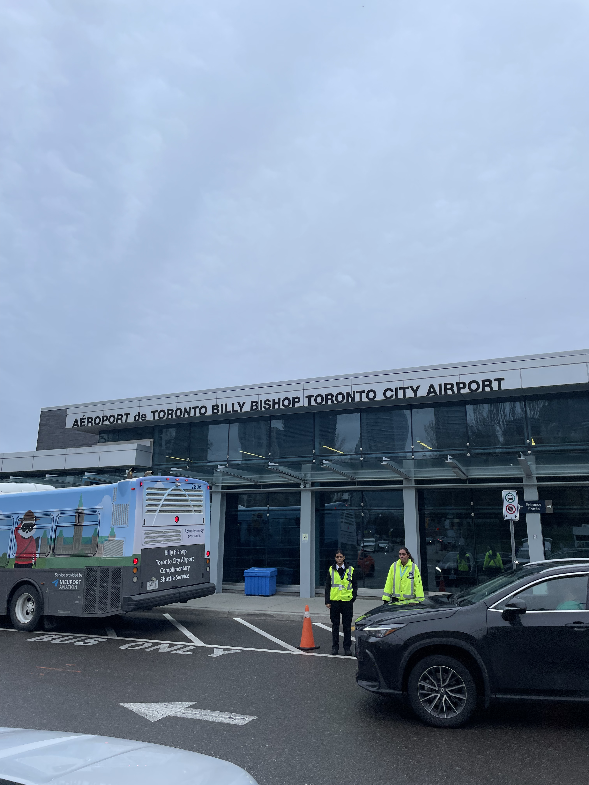
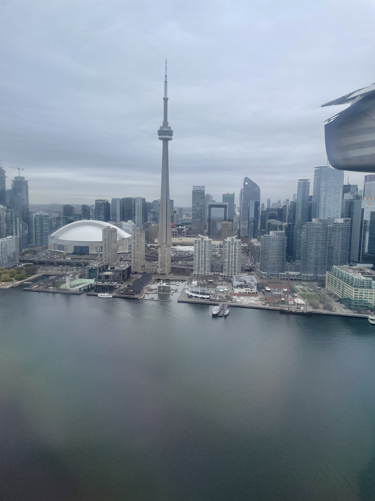

For those of you who aren't aware, Toronto has two airports: Pearson, a huge international hub that is a 25-minute express train from downtown; and a smaller, more regionally focused "City of Toronto" airport called Billy Bishop. Billy-B, as no one I'm aware of calls it, is located right off the waterfront in the middle of the city — you could probably hit the CN Tower with a 7 iron. It must be the most urban-located airport in North America, unless I'm missing some evil villain's secret jet strip in Queens.

A major benefit of this locale is that it allows customers to use multiple means of transit. I used to work in Transportation Planning in the Triangle area in North Carolina. The Raleigh-Durham (RDU) airport sits right between, well, Raleigh and Durham. BUT there is no easy transit (or bike lanes) from either city to the airport; even the bus lines are convoluted. Not having transit lines extend to airport access for major cities is insane but also tremendously difficult to accomplish in the US due to the way transit is funded, the lack of political will, and the way cities are designed.
So after we moved to Toronto, I had my eyes on the day I would finally fly out of Silly Billy Airport — we live close enough that I could hop on a city bike and cruise over. The ride was, in short, glorious.
The Question
Is Billy Bishop the most bike-accessible major airport in North America? My completely impartial and non-competitive hypothesis is that it offers bike access to the greatest number of people, both in absolute and relative terms to the city's population.
The Competitors
American delegation: JFK, LAX, O'Hare, DCA, ATL, SFO, DFW, PHL, SEA, DEN, CLT, MCO
Canadian delegation: Toronto Pearson, Billy Bishop, Montreal, Vancouver
Isochrone Madness
Using the Mapbox API's cycling isochrones at 30, 45, and 60-minute intervals to draw "how far can you realistically bike from each airport," then overlaying US Census and Statistics Canada population data to answer: how many people actually live within that range?
Results:
The data shows that under the 45 and 30 minute definitions, Billy Bishop is the most bike-accessible airport by population in the dataset. This reflects the incredibly dense Toronto downtown core sitting right at the airport's doorstep.
At the 60 minute mark, Billy Bishop comes in second — behind JFK, which makes sense given NYC has about 4x Toronto's population. When you extend the radius far enough, sheer NYC density wins. But for those of us not donning a cycling jersey and biking an hour with luggage, and instead willing to bike 30–45 minutes, Silly Billy wins handily.
Denver's airport, for what it's worth, is approximately 15 light-years from downtown Denver and scores accordingly.
Conclusion

Biking to the airport is freeing, gets your body loose before you're crammed into an aisle seat, is a carbon-free means of transit, is significantly cheaper than car-sharing or parking fees, and is overall awesome. If you ever get the chance to do it, do it.